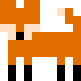
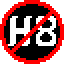

This page contains a selection of projects I have either worked on (or am currently working on). Not every project is listed here! Some are only on GitHub.
Viper-ish Verifier
Scala, SMT, Z3
A weakest-precondition-based modular program verifier for a subset of the Viper language. Supports pre- and postconditons on functions, mutable variables, control flow, domain axioms and assert/assume statements.
Generalized SAT Solver
Scala, SMT
A customizable SAT Solver built in Scala with support for both DPLL and CDCL search algorithms. Offers the option to toggle back-jumping, clause learning and the pure literal rule.
Racket-ish Compiler
Racket
A multi-pass compiler for a subset of the Racket language. Supports first-class procedures, macro expansion and dynamic type checking.
Deflog
Prolog, Pyton
A Prolog English dictionary prototype. Uses tries for quick lookup and autocomplete predictions. Source code.
Ecosystem Simulator

Haskell
A genetic algorithm visualizer developed in Haskell. Simulates emergent behaviour in a simplified ecosystem including overhunting and overgrazing. Source code.
FiveSquared
JavaScript, OracleDB
A full-stack "social media platform" for art enthusiasts. Uses a relational database backend to track accounts, posts, likes and comments. Dynamically generated SQL queries allow users to do advanced search. Source code.
Inclusion Bot

JavaScript, Discord
A Discord bot and text analysis tool for detecting hate speech. Detects and deletes offensive messages and messages author with detailed breakdown and confidence. Created for HackCamp 2023. Devpost link. Source code.